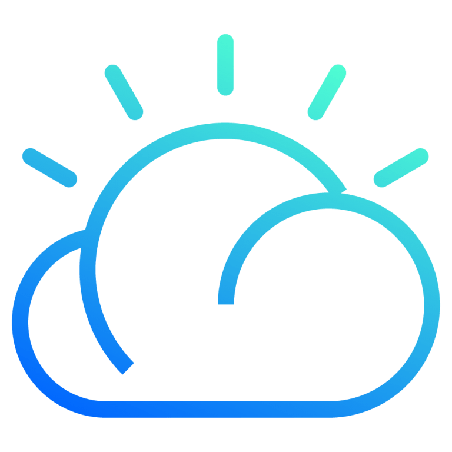
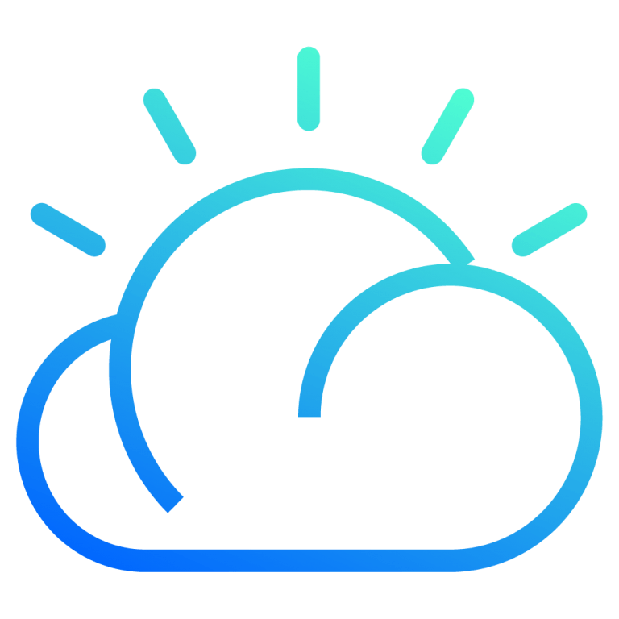

Assignment 3
IBM Object storage
- Create a Bucket in IBM object storage.
-
Upload an 5 images to ibm object storage and make it public. write html
code to displaying all the 5 images.
-
Upload a css page to the object storage and use the same page in your
HTML code.
-
Design a chatbot using IBM Watson assistant for hospital. Ex: User comes
with query to know the branches for that hospital in your city. Submit
the web URL of that chat bot as a assignment.
-
Create Watson assistant service with 10 steps and use 3 conditions in
it. Load that script in HTML page.
 
